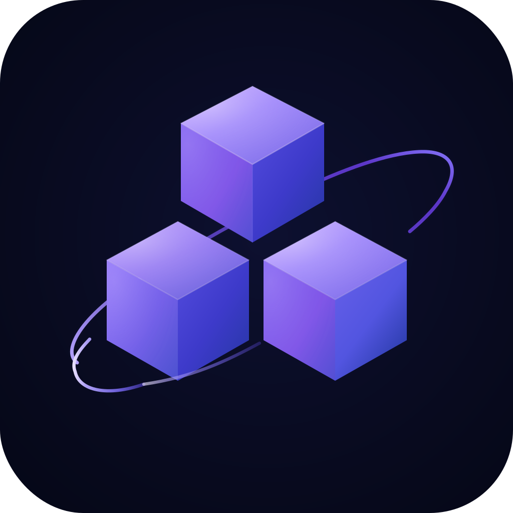

Folded lightPRESERVEDThe previous mint design is kept intact, including its production SVG.Open original study ↗
Miraintegrated development environmentApp iconCURRENT LAUNCHThe exact icon used by the installed app, on a quiet midnight background.